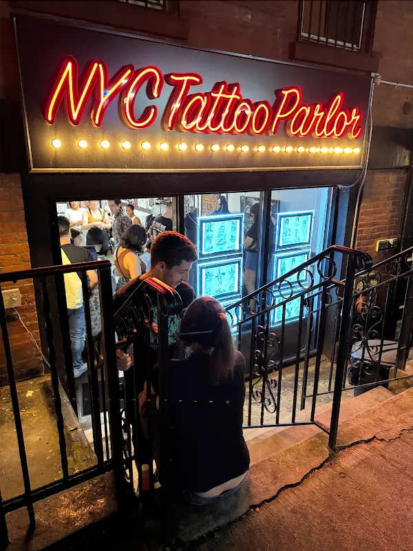

Bring the idea. Explore the possibilities.
NYC Tattoo Parlor is a tattoo and piercing shop in Brooklyn.
Explore the studio photographs, then contact the shop with your idea, preferred placement, and timing. Ask about consultation arrangements and preparation before booking.
- Business
- NYC Tattoo Parlor
- Location
- 164 N 6th St, Brooklyn, NY 11211
- Contact
- +17185003096

